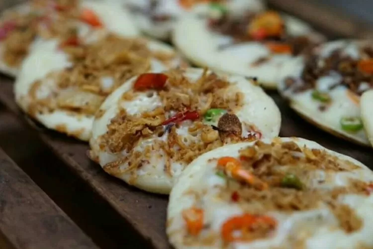

| Serabi atau surabi (dalam Sunda) adalah salah satu makanan ringan atau jajanan pasar khas majalengka dan diciptakan pada 1923 silam. Bahan dasar untuk membuat serabi adalah tepung beras, santan kelapa, dan garam. Variasi lainnya adalah serabi manis dengan gula, diberi aroma pandan atau vanila. |  |